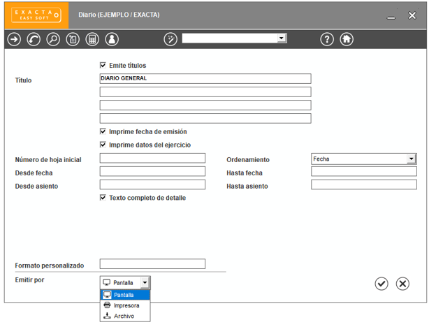

En la esquina inferior izquierda de todas las ventanas destinadas a la emisión de informes podes seleccionar el dispositivo por el cual emitirás el informe. Seleccionalo de la lista que aparece a la derecha de "Emisión por".
Como ves allí, las opciones son:
La emisión por archivo ofrece tres variantes:
El formato es el mismo que en el caso de realizar la emisión por impresora. Se utilizarán caracteres gráficos y se considerará un largo de hoja de 72 o de 64 líneas, según corresponda.
En este caso, no se imprimen títulos ni totales. Sólo se graban las líneas del cuerpo del informe. Los datos aparecen separados entre sí por una coma. Los datos alfanuméricos se encierran entre comillas (").
Este formato es estándar para distintas planillas de cálculo y bases de datos muy utilizadas en el mercado. Con cualquiera de estas herramientas o con algún lenguaje de programación, se podrá reformular la información.
Luego de elegir el formato, se debe ingresar el nombre del archivo donde se almacenará el informe. Se ofrece el nombre REPORTE.PRN, el cual puede ser modificado.
Si el archivo que se indica, ya existe, se advierte esta circunstancia y se solicita que se indique si se desea Reemplazar o Extender dicho archivo. Reemplazar significa borrar el archivo existente para guardar el nuevo, y Extender significa agregar al final del archivo existente la nueva información.
En este caso, se exportan todos los datos asociados al informe emitido; permitiendo su manipulación según la necesidad del usuario. No se incluyen datos de la empresa, del ejercicio, ni totales.